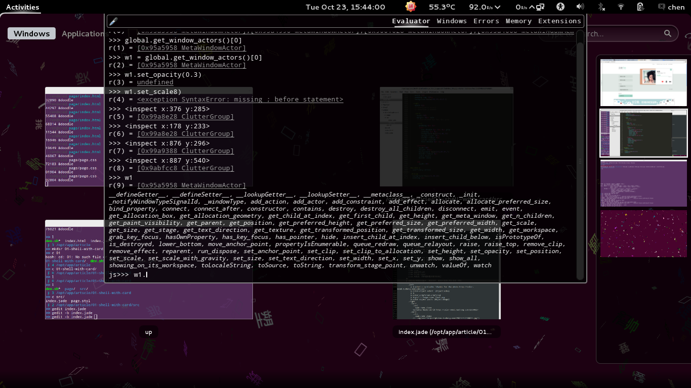

一直我觉得 Bash 为了命令行而设计, 因而缺失了许多图形界面的强大
十天前我突然有了个想法, 在论坛上发帖做了些说明, 觉得是一个不错的想法
Shell 适合服务器操作, 服务器出于性能考虑一般不值得有图形界面
服务器可以用图形界面做更多, 服务器上跑的网页也是图形界面
现在浏览器端应用功能越发丰富, 我觉得做出一个强大的 Shell 不会有问题
而且同理, Qt 或者 GTK 应用相对 Webkit 也是不错的选择
用 Bash 可以跑ssh, 跑top, 跑find, 各种文件操作也不会有问题
实在到了功能需求时, 通过sshfs挂载到本地对文本进行复杂的编辑也不会有问题
但是本地写代码写应用, 以及一些复杂的桌面任务却不适合同样一个 Shell
比如操作窗口位置, 这是常用鼠标拖动去完成的, 为什么不方便用命令?
更实际的比如操作文件, JS 语言特性多, 能组合出各种功能, 为什么非要 Bash?
JS 比起 Bash 有着更丰富模块, 更灵活的抽象, 难道不能胜任 Shell 的操作么?
Bash 的好处在于简短, 即便在服务器没有补全的情况下也能快速操作
➤ ls
file-1 file-2 file-3 dir-1/ dir-2/ dev.sh
➤ cd ; ls
dl/ desk/ music/ docs/ code/ test/
➤ rm test -rf
dl/ desk/ music/ docs/ code/
➤ ifconfig
wlan0: flags=0000
inet 192.168.1.0 netmask 255.255.255.0 broadcast 192.168.1.255
inet6 0000::000:0000:0000:00000 prefixlen 64 scopeid 0x20
ether 00:26:82:b1:6d:81 txqueuelen 1000 (Ethernet)
RX packets 95334 bytes 70601429 (67.3 MiB)
RX errors 0 dropped 0 overruns 0 frame 0
TX packets 91255 bytes 18104712 (17.2 MiB)
TX errors 0 dropped 0 overruns 0 carrier 0 collisions 0
➤ ▮
相对来说, 任意种语言都会被觉得冗长, 只要你想标记字符串标记括号
比如用一个Shelljs做一个环境对文件进行基本的操作
➤ require('shelljs/global')
{}
➤ ls()
[ 'shelljs' ]
➤ cd '../'
undefined
➤ ls()
[ 'doc', 'kit', 'dl', 'desk', 'pub', 'code', 'video', 'pic', 'music', 'tmp' ]
➤ mkdir('test')
➤ rm('-rf', 'test')
➤ ▮
不过, 语法总是值得尝试去做改变的, 而且现在已经能制造那么多的语言
require('shelljs/global')
ls()
cd '../'
mkdir('test')
rm('-rf', 'test')
比如在 LiveScript 里, \开头的字段表示字符串, !结尾的变量作为函数执行
另外就像 CoffeeScript 一样, 括号经常省略, 逗号依然用来分隔参数
require \shelljs/global
ls!
cd \../
mkdir \test
rm \-rf, \test
再允许多行输入, 再封装env环境对应到[Object]当中, 就有了另一个 Shell
同时用 JS 的运行环境很容易将返回结果收集进行更多的操作
接下来的问题是类似sshvimbyobu这样占用了终端界面的命令, 在 JS 环境中无法展开
我的看法是, 既然能用网页作为图形界面, 我们就用图形界面去解决
这在tty.js我看到了具体的实现, 因此我觉得理所当然这是可行的
我想到图形界面原来容易实现, 于是做出界面来配合命令行编辑文件
file0可以通过命令行打开, 并返回文件对象, 同时边上展开文本编辑器
文件编辑结束, 系统在终端打印该事件, 并完成文件对象的修改
➤ file0 = fs.open \file-0
file0: [Object]
➤ file1 = fs.open \file-1
file1: [Object]
➤ file2 = fs.open \file-2
file2: [Object]
➤ file0.save!
➤ file0
file0: [Object::File]
➤ ▮
自然地, save按钮还可以用file0.save!来完成. 同样提供更多操作的接口
比如说从终端预览图片, 预览文字, 就和平常我们的用法是一样的
➤ echo1 = card.echo 'thanks for the photo http://color-mood.tuchong.com/2300032/'
echo1: [Object:echo]
➤
undefined
➤ pic1 = Image.view \leaf.png
pic1: [Object:Image]
➤ ▮

或者说没有必要用半个屏幕来放终端, GNOME3 的 Looking-Glass 就好了
到此为止, 都是一些想法和设计图, 而没有可以跑的代码
好无趣啊, 那种想到了点子却自己没有能力去改变和实现的感觉
图形界面和命令行界面之间似乎有着一道坎, 我想这是可以继续缩短的
或者只是单纯地期待自己指尖的操作系统能更轻松被操作